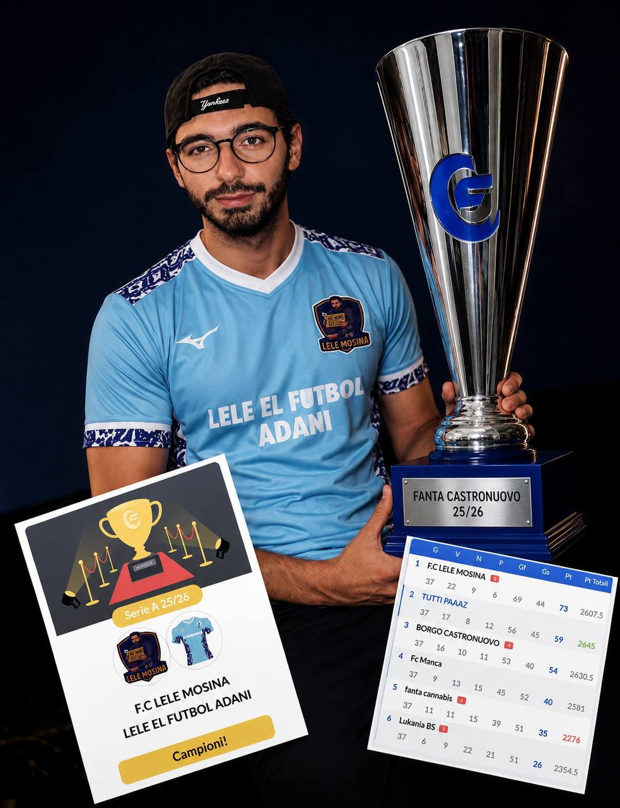
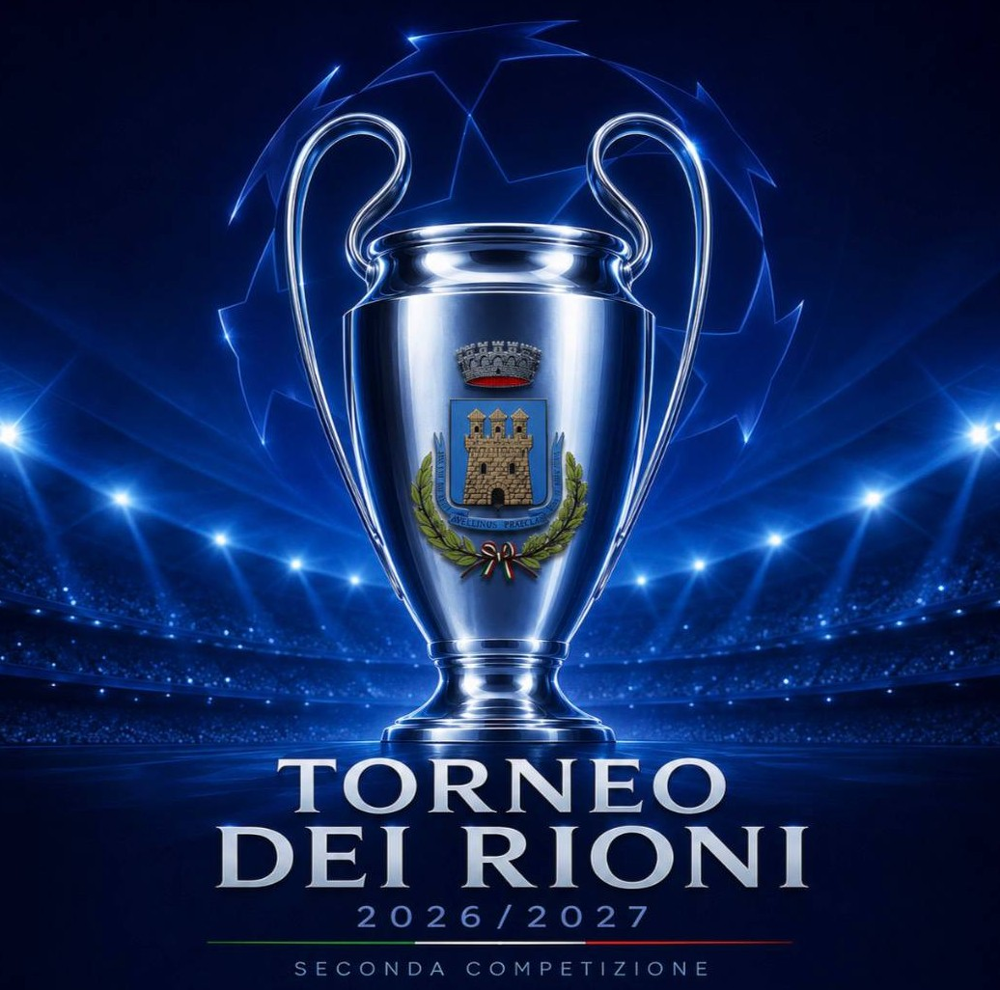
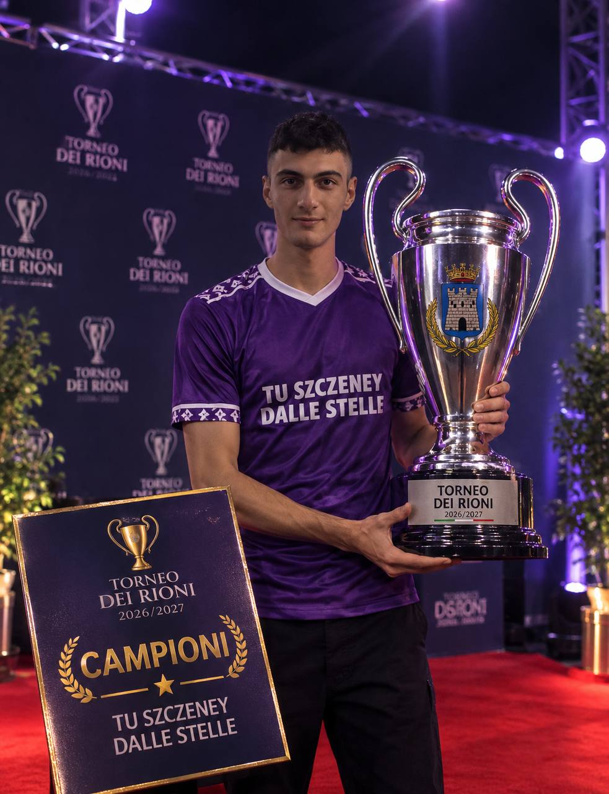

Campione in carica · Stagione 2025/2026
Lele Mosina FC

Avviso della Federazione. Quota di iscrizione di € 25,00: scadenza prorogata al 31 dicembre 2026. Leggi il comunicato
Scadenza 31 dicembre 2026I campioni che hanno scritto la storia del Fanta Castronuovo, nel Campionato e nel Torneo dei Rioni.
Il titolo più importante della Lega: il Campionato Fanta Castronuovo.

La seconda competizione ufficiale della Lega: gironi, semifinali e finale per la gloria.


Edizione 2026/2027 in corso. Segui risultati e racconto del torneo sul giornale della Lega.
Vai al Torneo dei Rioni